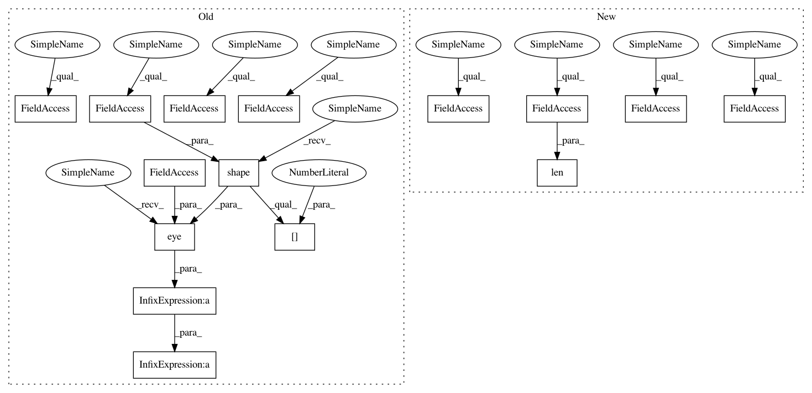

48270681afc13081094f7f398a1e194c6b07ba9b,gpflow/models/gplvm.py,BayesianGPLVM,_build_predict,#BayesianGPLVM#Any#Any#,149
Before Change
there are notes in the SGPR notebook.
:param Xnew: Point to predict at.
num_inducing = tf.shape(self.Z)[0]
psi1 = self.kern.eKxz(self.Z, self.X_mean, self.X_var)
psi2 = tf.reduce_sum(self.kern.eKzxKxz(self.Z, self.X_mean, self.X_var), 0)
Kuu = self.kern.K(self.Z) + tf.eye(num_inducing, dtype=settings.float_type) * settings.numerics.jitter_level
Kus = self.kern.K(self.Z, Xnew)
sigma2 = self.likelihood.variance
sigma = tf.sqrt(sigma2)
L = tf.cholesky(Kuu)
After Change
pX = DiagonalGaussian(self.X_mean, self.X_var)
num_inducing = len(self.feature)
psi1 = expectation(pX, (self.feature, self.kern))
psi2 = tf.reduce_sum(expectation(pX, (self.feature, self.kern), (self.feature, self.kern)), axis=0)
Kuu = self.feature.Kuu(self.kern, jitter=settings.numerics.jitter_level)
Kus = self.feature.Kuf(self.kern, Xnew)
sigma2 = self.likelihood.variance
sigma = tf.sqrt(sigma2)
L = tf.cholesky(Kuu)
In pattern: SUPERPATTERN
Frequency: 3
Non-data size: 15
Instances
Project Name: GPflow/GPflow
Commit Name: 48270681afc13081094f7f398a1e194c6b07ba9b
Time: 2018-01-03
Author: dutordoirv@gmail.com
File Name: gpflow/models/gplvm.py
Class Name: BayesianGPLVM
Method Name: _build_predict
Project Name: GPflow/GPflow
Commit Name: 48270681afc13081094f7f398a1e194c6b07ba9b
Time: 2018-01-03
Author: dutordoirv@gmail.com
File Name: gpflow/models/gplvm.py
Class Name: BayesianGPLVM
Method Name: _build_likelihood
Project Name: GPflow/GPflow
Commit Name: 48270681afc13081094f7f398a1e194c6b07ba9b
Time: 2018-01-03
Author: dutordoirv@gmail.com
File Name: gpflow/models/gplvm.py
Class Name: BayesianGPLVM
Method Name: _build_predict
Project Name: GPflow/GPflow
Commit Name: 6c35a7a8544dfecfe92ef9b559b90fcb40b364eb
Time: 2017-11-20
Author: mv310@cam.ac.uk
File Name: gpflow/models/sgpr.py
Class Name: SGPR
Method Name: _build_predict